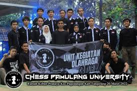
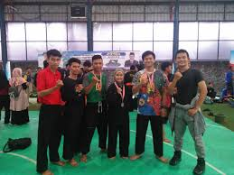
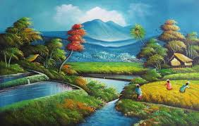
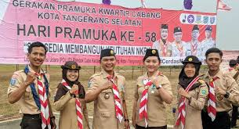
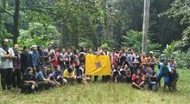
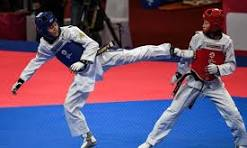
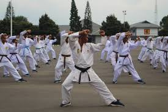
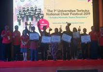

| Jenis UKM | Description | Gambar |
|---|---|---|
| Seni Tari | Seni tari adalah perpaduan yang indah antara keanggunan, ekspresi, dan cerita yang diungkapkan melalui gerakan tubuh yang dinamis dan ritmis. Setiap gerakan menari memiliki makna yang dalam, memperlihatkan beragam emosi, budaya, dan tradisi. Dalam seni tari, setiap langkah adalah sebuah narasi yang mengajak penonton untuk terhubung dengan cerita yang disampaikan oleh penari, menciptakan pengalaman yang memukau dan mendalam bagi semua yang menyaksikannya. |  |
| unit kegiatan olahraga | Unit ini berbentuk lembaga UKM yang membawahi seluruh kegiatan olah raga di Unpam, sedangkan masing-masing kegiatan olah raga berada di bawah seorang koordinator |  |
| unit aktifitas masjid | Unit aktivitas ini menjadi sarana mahasiswa yang memiliki minat dan bakat di bidang kerohanian. Unit JM, adalah merupakan wadah bagi mahasiswa yang ingin mengembangakan wawasan keagamaan dengan basis memakmurkan masjid Bahrul Ulum yang ada di Universitas Pamulang sebagai pusat kegiatan dan olah pemikiran. Unit kemahasiswaan ini juga berada di bawah bimbingan Koordinator Kerohanian Yayasan Sasmita Jaya Grup. |  |
| pencak silat | Pencak Silat adalah seni bela diri tradisional yang mencakup keterampilan fisik, mental, dan spiritual. Dengan akar yang dalam dalam budaya Indonesia dan Asia Tenggara, seni bela diri ini tidak hanya tentang keterampilan bertarung, tetapi juga tentang keindahan gerakan, kepekaan terhadap lingkungan sekitar, dan penghormatan terhadap tradisi. Dengan gerakan yang dinamis dan serangan yang cepat, Pencak Silat mengajarkan kesadaran diri, kontrol emosi, dan keberanian, sambil tetap mempertahankan nilai-nilai seperti rasa hormat, kejujuran, dan persatuan |  | Seni rupa | Seni rupa adalah bentuk ekspresi kreatif yang menggunakan berbagai media dan teknik untuk menyampaikan gagasan, emosi, dan persepsi melalui visual. Dari lukisan dan patung hingga instalasi dan seni digital, seni rupa mencakup beragam gaya, tema, dan pendekatan yang memungkinkan para seniman untuk mengeksplorasi keindahan, kompleksitas, dan keragaman dunia di sekitar kita. Selain sebagai sarana untuk menciptakan keindahan, seni rupa juga memiliki kemampuan untuk memprovokasi pemikiran, merangsang imajinasi, dan memicu perubahan sosial, menjadikannya sebagai salah satu wujud paling menonjol dari ekspresi manusia. |  |
| Unit Aktivitas Pramuka | Mahasiswa yang meminati aktivitas pramuka. Kegiatan-kegiatan pada unit ini meliputi: pendidikan dan latihan dasar, jambore, kesehatan dan pertolongan pertama, diskusi dan kajian, donor darah dan aksi-aksi kemanusiaan. |  |
| Divisi Mahasiswa Pecinta Alam | Wadah penyaluran minat, bakat dan kegemaran mahasiswa di bidang cinta alam ini merupakan unit yang cukup banyak peminatnya. Setiap anggota dibina dan diarahkan untuk memahami dan mencintai alam. Kegiatan yang menonjol unit ini misalnya: diklat dasar, diklat lanjut, ekspedisi, arung jeram, konservasi lingkungan dan eksplorasi goa |  |
| Tekwondo | Tekwondo adalah seni bela diri tradisional Korea yang telah berkembang menjadi olahraga yang populer di seluruh dunia. Kata "Tekwondo" berasal dari bahasa Korea, di mana "Tae" berarti "tangan" atau "pukulan", "Kwon" berarti "kaki" atau "tendangan", dan "Do" berarti "jalan" atau "cara hidup". Jadi, Tekwondo secara harfiah dapat diartikan sebagai "jalan pukulan dan tendangan" |  |
| Karate | Karate adalah seni bela diri Jepang yang telah menjadi salah satu yang paling dikenal di seluruh dunia. Berakar dalam sejarah kuno Jepang, Karate telah berkembang menjadi sistem bela diri yang terkenal karena teknik pukulan tangan dan tendangan yang kuat, serta penekanan pada pengembangan karakter dan disiplin mental |  |
| Aktivitas Paduan Suara | Selain minat, bakat dan kegemaran di bidang musik juga ada unit aktivitas yang mewadahi mahasiswa yang memiliki minat dan bakat di bidang tarik suara secara kelompok. Dalam unit paduan suara, mahasiswa bisa mencoba kemampuan tarik suara, irama, aransemen, dan keberanian tampil menjual kemampuan diri. Kegiatan unit paduan suara tidak saja berlatih tarik suara dan kekompakan, tapi juga belajar mengelola lomba paduan suara |  |
|
|
||
Informasi kontak UKM
Alamat: Jl.kh.umar.rencalang
Email: example@ukm.ac.id
Telepon: 0838-9583-8227